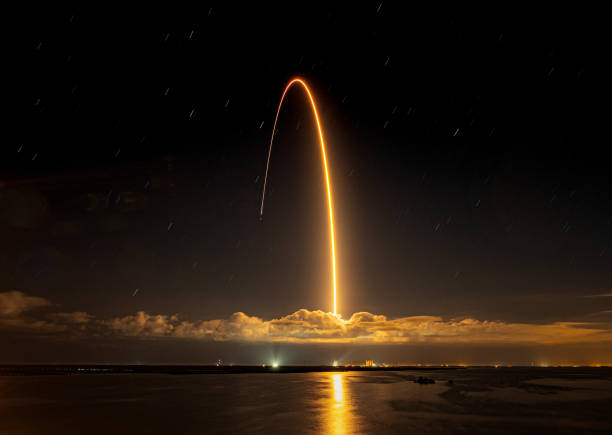
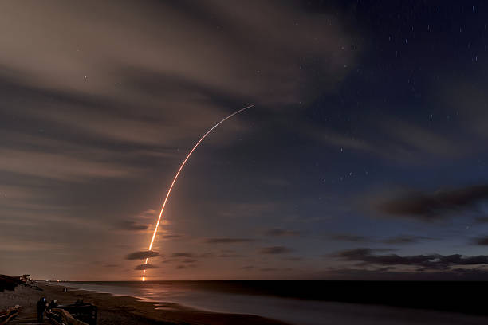

SpaceX Successfully Launches New Rocket
 SpaceX achieved another major milestone today with the successful launch of its newest rocket, designed to carry both crew and cargo into orbit. The rocket lifted off from the launch pad early this morning under clear skies, and telemetry reports indicate a flawless ascent into space.
The mission, which included both satellites and scientific instruments, marks a significant step in SpaceX’s long-term plan to expand space travel capabilities. Engineers monitored every phase of the flight, ensuring that the rocket's stages separated correctly and that payloads were safely deployed.
SpaceX CEO Elon Musk stated that this launch demonstrates the company’s commitment to making space travel more reliable and cost-effective. The rocket used advanced reusable technology, allowing key components to be recovered for future missions, reducing costs and environmental impact.
Space enthusiasts around the world followed the launch live, cheering as the rocket entered orbit. The successful mission further cements SpaceX’s reputation as a leader in private space exploration. Officials also highlighted the importance of ongoing international cooperation to ensure the safety and success of all space missions.
In addition to the technical achievements, this launch is a reminder of humanity’s growing capabilities in space technology. The successful deployment of satellites from this rocket will enhance global communication networks, weather monitoring, and scientific research. SpaceX continues to push the boundaries of innovation, inspiring a new generation of engineers, scientists, and space enthusiasts worldwide.